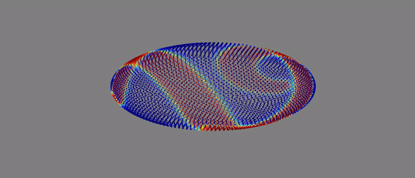

Background and Research Interests
My research interests are radial basis functions and least squares methods for data interpolation, approximation, reconstruction,
discretization of partial differential equations (PDEs) and algorithm acceleration with multithreaded and multicore computing.


For more information, CV.